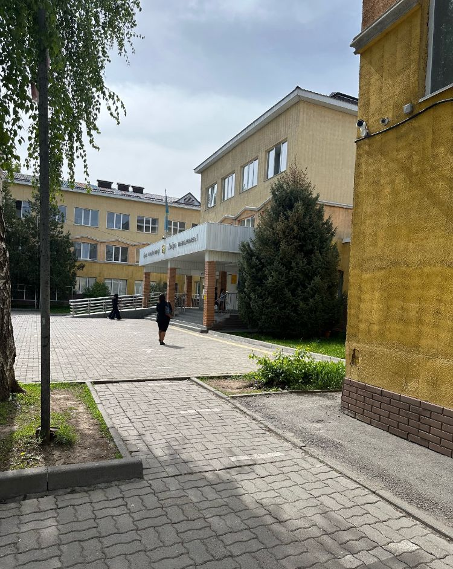
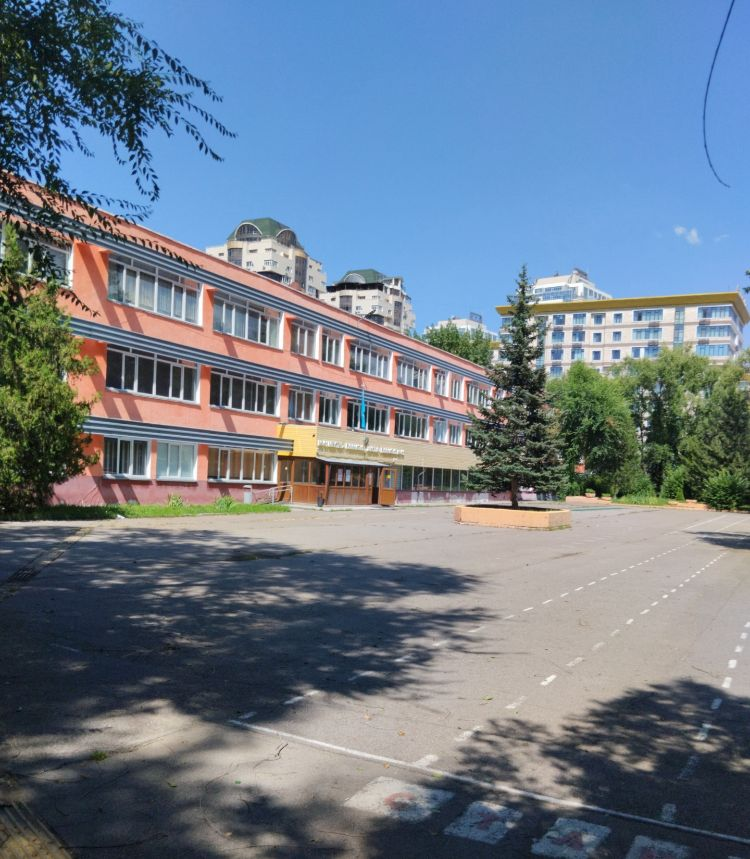
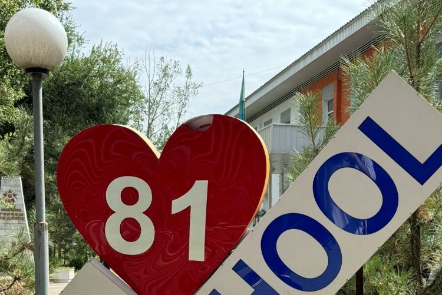

Школа-гимназия №138 им. Базарбаева
🏫 Об учебном заведении
• Это гимназия — то есть школа с уклоном на углублённое обучение.
• Здание: 3-этажное.
• График работы: обычно с понедельника по субботу — примерно 08:00–18:00 (по данным справочников).
★Репутация и отзывы
• На сервисе отображается рейтинг около 4.7 / 5 (по отзывам) для гимназии №138.
• Согласно описаниям на образовательных порталах: школа воспринимается как "гимназия — хороший вклад в будущее ребёнка", с углублённым обучением, факультативами, мотивированными учителями.
• В отзывах: некоторые хвалят учителей и образовательный уровень; есть и критика — например, жалобы, что не всем удаётся попасть (по адресной справке), или бывает строгость.
Особенности
Инфраструктура
Творчество
КГУ Гимназия №21

🏫 Об учебном заведении
• Гимназия предоставляет общее среднее образование.
• Обучение возможно на казахском и/или русском языке (некоторые источники указывают "Русский | Казахский").
• В школе, согласно данным, есть: столовая, спортивный зал, спортивная площадка, актовый зал, компьютерные классы, интернет, охрана и другая инфраструктура.
• Обучение — бесплатное, так как школа государственная и финансируется из бюджета.
★Репутация и отзывы
• Средний рейтинг гимназии на онлайн-платформах: примерно 4.3–4.4 из 5.
• Многие родители и бывшие ученики пишут, что школа "отремонтированная, уютная, хорошие учителя, достойные условия и атмосфера обучения".
• Но отзывы разные: встречаются и замечания, например, что "преподаватели иногда строгие, требования высокие".
Учебная работа
Спорт
Креатив
КГУ Школа-гимназия №51

🏫 Об учебном заведении
• Образовательная программа: общее среднее образование + гимназические классы.
• Приём в 1 класс обычно начинается с апреля (онлайн через сайт или eGov).
• Есть начальная, средняя и старшая школа.
★Репутация и отзывы
Плюсы:
• Чистая, большая школа.
• Хорошие учителя по ряду предметов.
• Удобное расположение в Коктем-3.
Минусы:
• Некоторые учащиеся жалуются на строгие правила (в том числе по телефонам).
• Есть замечания по организации питания и части педагогов.
Средний рейтинг: около 4.2–4.3.
Профильные классы
Оснащение
Достижения
КГУ Школа-гимназия №81

🏫 Об учебном заведении
• Школа основана в 1965 году
• Обучение на казахском и русском языках
• Профильные направления: физико-математическое, химико-биологическое
• Есть предшкольная подготовка
• Инфраструктура: 2 спортивных зала, библиотека, столовая, медицинский кабинет
★Репутация и отзывы
• Средний рейтинг: 4.5 из 5
• Сильные стороны: подготовка к ЕНТ, олимпиадное движение
• Много выпускников поступают в ведущие вузы Казахстана
• Активная внеклассная работа: научные кружки, спортивные секции
• Недостатки: переполненные классы, требует ремонта старая часть здания